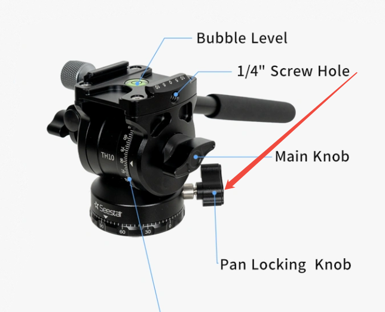
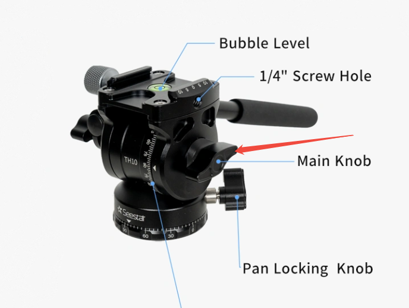
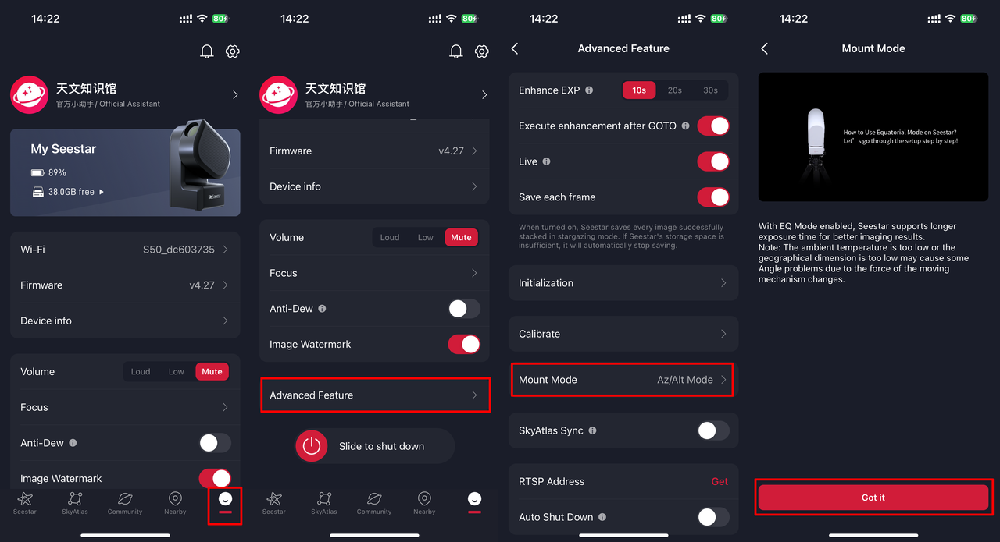
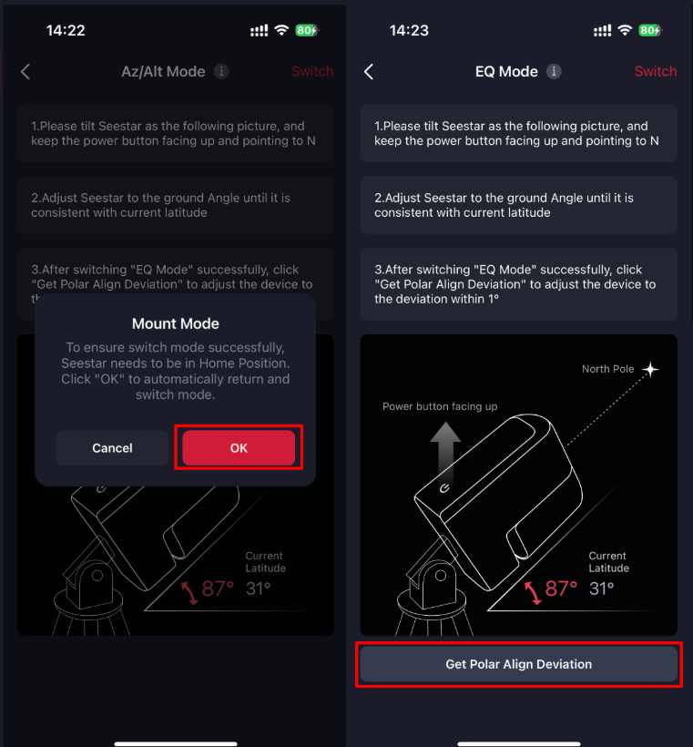
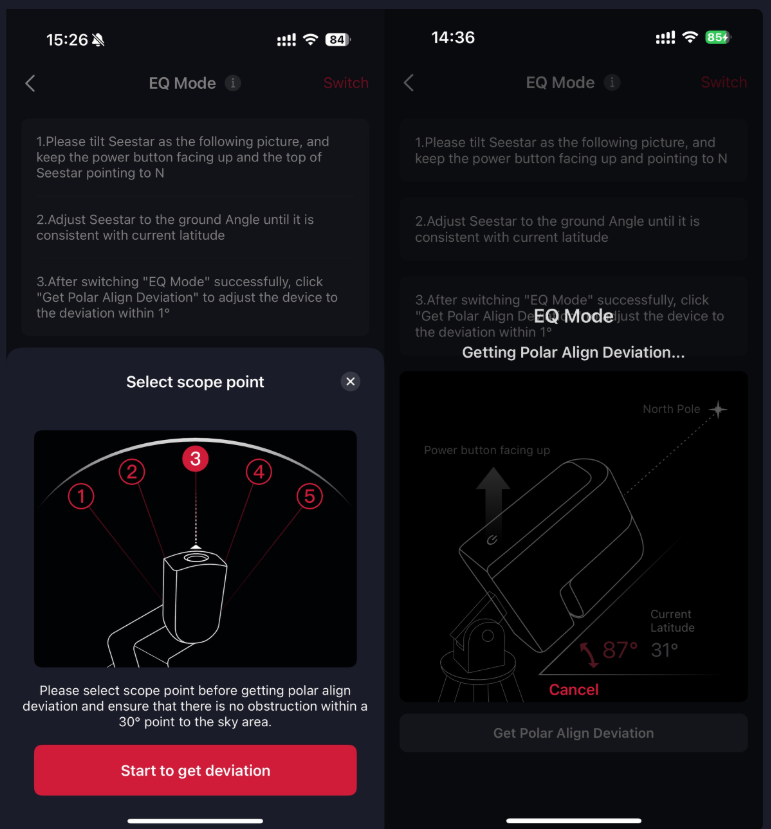
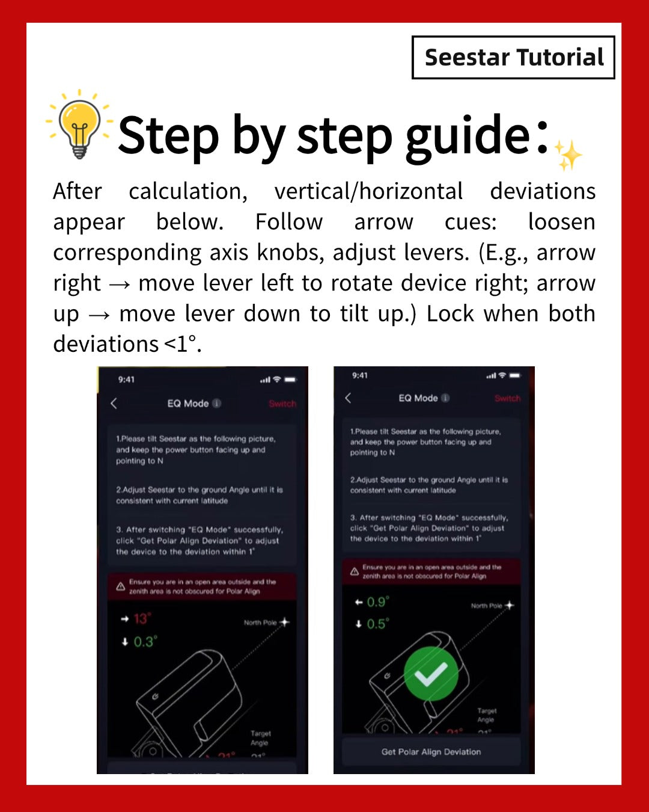

Understand the goal
Point the rotation axis at the north celestial pole
In normal Alt-Az mode, Seestar follows an object by moving vertically and horizontally. This works well for shorter exposures, but the frame slowly rotates. In EQ mode, the tilted mount turns around an axis parallel to Earth’s rotational axis, reducing field rotation and enabling longer exposures.
The targetSeestar’s rotation axis → north celestial pole
Polaris does not have to be visible in the camera. Seestar can plate-solve other star fields, but it still needs a clear patch of starry sky.
Before dark
Build a stable starting point
- 1Use a stable tripod and adjustable wedge.
The head must allow small, controlled altitude and azimuth adjustments. A loose ball head can shift while it is locked.
- 2Choose firm ground and level the tripod.
Avoid soft soil, loose decking, and surfaces that move. Place the telescope’s center of gravity over one tripod leg.
- 3Aim the mount roughly toward true north.
Orient the telescope—not the current camera view—toward north, with the power button facing upward.
- 4Tilt the telescope to your latitude.
Set the wedge to approximately your local latitude. Lightly lock altitude while leaving room for fine adjustment.


Official Seestar illustrations · TH10 equipment setup guide ↗
In the Seestar app
Switch the mount to EQ mode
Start with Seestar in Home Position. Power-cycle the telescope, reconnect the app, and follow the current menu path:

Confirm that the power button faces up, the mount points roughly north, and the tilt is close to your latitude. Tap Switch, then OK if Seestar asks to return home.

Official Seestar app illustrations · EQ Mode app guide ↗
Plate solve, then refine
Measure and adjust one axis at a time
- 1Tap Get Polar Align Deviation.
If prompted, choose one of five sky regions. Pick the clearest area, away from trees, roofs, clouds, and streetlights. Position 3 is roughly overhead.
- 2Let Seestar photograph and plate-solve.
Do not touch the tripod while the camera turns and measures the star field.
- 3Adjust azimuth first.
Follow the horizontal arrow and make a tiny left/right adjustment. If the error grows, reverse direction. Lock gently near zero.
- 4Adjust altitude.
Use the wedge’s elevation control for very small up/down movements. Aim much closer to zero than the basic one-degree acceptance limit.

After the first star measurement, the app may use internal sensors to estimate movement. Helpful—but not necessarily a fresh plate solve.

Official Seestar app illustrations · EQ Mode app guide ↗
The step that matters most
Re-measure until the result repeats
Run Refresh Polar Alignment Error, or Get Polar Align Deviation again, so the camera makes a new image-based measurement. Adjust and repeat until consecutive readings remain close.
Then leave Polar Alignment, reopen it, and start a completely new measurement. A repeatable 0.1° / 0.2° is more trustworthy than a single, fleeting 0.0° / 0.0°.
Both axes below 1° earns Seestar’s green check. For 60-second exposures, get substantially closer to zero and verify the result more than once.
Lock, then test the sky
Tighten both wedge locks carefully and measure once more. Start imaging at 30 seconds and inspect the stars at high zoom. If they remain round with few rejected frames, test 60 seconds. Real stars are the final verdict.
Save for the field
The 12-step night checklist
When things drift
Troubleshooting
Get Polar Align Deviation fails or stalls +
Choose another sky region and avoid clouds, haze, trees, buildings, and bright lights. Check focus in Stargazing mode and use autofocus if needed.
The reading changes after Refresh +
The continuous sensor estimate was not exact, or the setup moved. Trust the new image-based measurement, make a small adjustment, and plate-solve again.
The app is near 0°, but stars trail at 60 s +
Restart Polar Alignment and confirm the result repeats. Also check for wind, vibration, tripod movement, and rejected frames.
Alignment changes when I tighten a lock +
The wedge is shifting under clamping force. Tighten slowly and run a new deviation measurement after the final lock.
The result is 20–90° wrong +
Check the starting orientation, then run Me → Device Management → Sensor Calibration and verify compass and level calibration.
I cannot see Polaris +
That is not necessarily a problem. Aim approximately north and select a clear region; Seestar plate-solves other stars to find the polar-axis error.
Sources & further reading
This guide was adapted from the supplied Seestar_S30_Pro_Polar_Alignment_Manual.md.